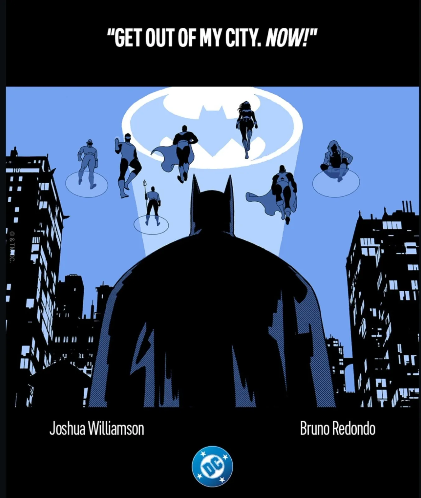
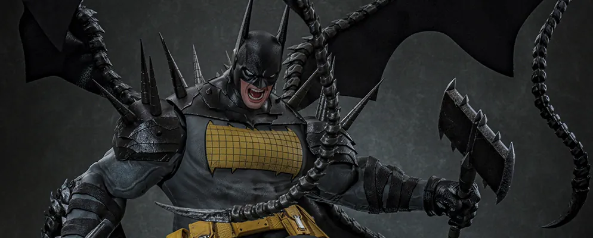

Clayface's final trailer still belongs to the actor

Dates came in all week. One face did not move off the front. Read that one first.
01screenConfirmed
On 24 September, Warner Bros. posted a final trailer for Clayface on its YouTube channel.
Tom Rhys Harries has the title role. James Watkins directs. Mike Flanagan and Hossein Amini wrote the screenplay. The story credit is Flanagan's.
The official site puts the film in North American theatres on 23 October 2026. Release outside North America begins 21 October 2026. The studio title page lists 23 October 2026, with genres Action/Adventure and Horror. Neither page prints a rating.
The Numbers lists an MPA rating of R. The reasons it gives are strong bloody violence, gore, language, some nudity and brief drug use. The note cites bulletin 2954 and certificate 56141, dated 16 September 2026. A filmratings.com search for Clayface returned no results.
The date is the studio's. The letter is not.
On the map
Sits after Creature Commandos — Season 1, the last so far.
- Universe
- 44 · The DCU
- Tier
- Optional
- Status
- Parked until 23 October 2026
02comicsConfirmedOff the map
Williamson names Batman: Justice Year for 2027
Joshua Williamson wrote the title Batman: Justice Year on 2 October. The post says it is "From me and @Bruno_Redondo_F in 2027", and that more info comes next week.
A second post the same day calls one picture a teaser. The post says "Art by @Bruno_Redondo_F and @fxstudiocolor_".
David Brooke at AIPT reports that the name was given at San Diego Comic-Con Málaga. The piece says the series is about Batman's early relationship with the Justice League. It also says the release date, the format, and the extent of the Justice League roster have yet to be revealed.
DC's panel schedule does not name the book. Next Level and Beyond sits on Saturday 10 October. The slot is 11:00 to 11:45 a.m., in Room 409. Marie Javins is the moderator.
The year is on his post. A month is not.

03screenReported
Dick Grayson and Jason Todd have their voices, TheWrap says
Deadline reports a move for Dynamic Duo from 30 June 2028 to 22 September 2028. TheWrap dates that same day, 22 September 2028.
Deadline says the film follows the early days of Dick Grayson and Jason Todd. Arthur Mintz directs. Matthew Aldrich wrote the script. Swaybox is the New Orleans studio on the film. Arthur Mintz and Theresa Andersson are its creators.
TheWrap has confirmed four voices in the cast. Mason Thames voices Dick Grayson. Logan Kim voices Jason Todd. Lee Pace will voice Red Hood One. Steve Buscemi will portray Red Hood Two. The piece calls the film computer animation, models and large-scale puppetry. Matt Reeves's 6th and Idaho is among the partners.
TheWrap says it is unclear if Thames and Kim could reprise their roles. Four names are confirmed. The question stays open.
On the map
Sits after Aztec Batman: Clash of Empires, the last so far.
- Universe
- 07 · Standalone Films
- Tier
- Core route
- Status
- Parked until 30 June 2028
04comicsReportedOff the map
Absolute Batman is off the December list, Comic Book Club says
John Dodge at CBR says DC's solicitations date the release of Absolute Batman #25 to 28 October 2026. He says the series goes on hiatus after that issue. He puts the issue at 30 pages. Alex Zalben at Comic Book Club says the main title is absent from DC's December solicitations.
CBR says the series returns in 2027. Issue 26 has a guest artist. CBR puts Barbara Gordon's personal journey on that 2027 return, not on issue 26. Nick Dragotta is back for issue 27. Renan Fontes at GameRant reports no confirmed 2027 return, other than a TBP collection of recent issues. Comic Book Club says a Beyond Ark M Special will hit on 11 November.
The December gap is what the three reports share. The return is where they split.
05booksConfirmedOff the map
Neal Adams's Batman has an Absolute Edition out
Penguin Random House lists Batman by Neal Adams: Absolute Edition 1967-1970 as published on 29 September 2026. The page gives 408 pages. Frank Robbins and Dennis O'Neil are the writers named there. Neal Adams is the illustrator. DC Comics is the publisher.
The 1970-1998 edition is listed as available on 15 June 2027. It has 504 pages. Neal Adams wrote it and drew it. That page names a foreword by Walt Simonson.
One volume is already out. The next one has the publisher's day.
06toysConfirmedOff the map
Hot Toys dates Absolute Batman, and only for Japan
Hot Toys Japan lists a 1/6 Comic Masterpiece figure of Absolute Batman, CM#030, for January 2027. The English line on the page limits sale to Japan. The spec table gives a height of about 41 cm. It lists 20 points of articulation. General sale is a separate line.
CM#030B carries the same month, and the same limit to Japan. The page links toysapiens.jp. The spec table adds a bonus cape with a shawl.
January is the maker's month. Japan is the maker's limit.

07otherReported
Late wires
Screen Rant reports that new episodes on 2 October completed Batwheels season 3 on HBO Max. Felipe Rangel writes that the season had come in batches. He writes that Ethan Hawke voices Batman. He calls it a show for younger viewers. The same piece names Get Jiro. It also names a Lanterns season 1 finale. Both sit among other DC series with new October episodes on that service.
The season in that piece is whole as of 2 October. Hawke voices Batman in it.
The city is wet tonight. Get some sleep, Night Watchers. The file's open again next Sunday.